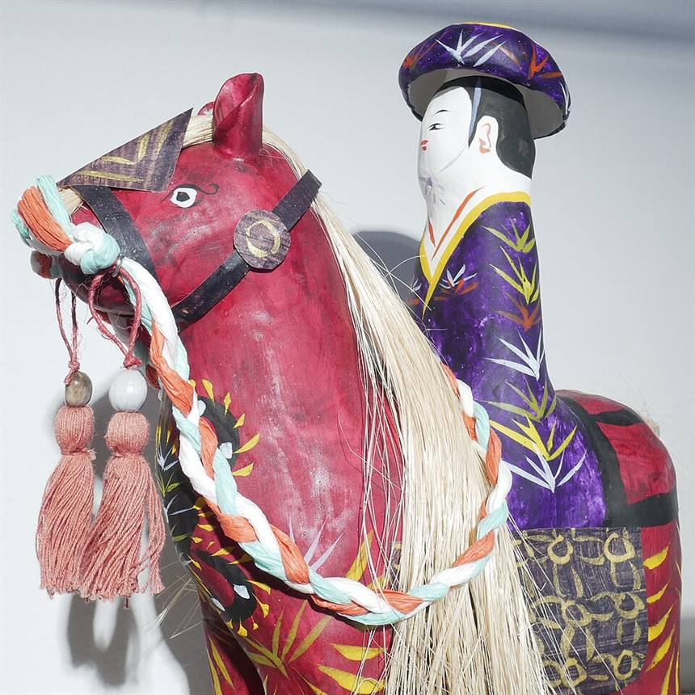

← Back to all crafts
A Ryukyu hariko horse and rider made by Toyonaga Morito. Photo: 氏子, CC BY-SA 4.0, via Wikimedia Commons (resized).

What is it?
This is a lost and revived craft. Ryukyu hariko are papier-mâché figures from Okinawa.
Parents bought them for their children as good-luck charms. (Google Arts & Culture, n.d.)
History
The figures were sold at toy stalls on a festival day, 4 May in the old calendar. (Google Arts & Culture, n.d.)
In the Meiji period (1868–1912), factory-made toys slowly replaced them. (Google Arts & Culture, n.d.)
Why is it endangered?
Factory toys took over and no younger people wanted to learn, so the skills faded away.
Now young artists are making new styles, and they are popular with younger people again. (Google Arts & Culture, n.d.)
Its return shows that a craft can come back if people support it.
How you can help
- Buy a figure made by an artist in Okinawa.
- Try papier-mâché at school and learn the story behind these toys.
- Support artists who mix old skills with new ideas.
Quick facts
- Made in Okinawa
- Sold as good-luck charms for children
- Faded in the Meiji period (1868–1912)
- Now making a comeback
Sources
- Rediscovering the Lost Crafts of Japan, Google Arts & Culture, n.d.
- Gifu Japanese Umbrellas, Kogei Japan, n.d.